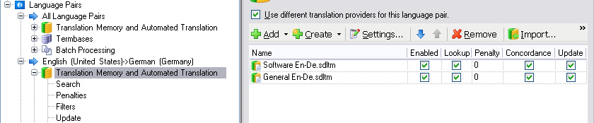

Adding Translation Memories
Projects can contain one or more translation providers per language directions. These are usually (file or server-based) translation memories (TMs), but they could also include automated translation providers such as Google Translate. TMs are not mandatory, but will usually be part of the project, because without TMs you cannot apply tasks such as creating project TMs, pre-translation, etc. In this chapter you will learn how to programmatically add main TMs to your project.
Add the Main Translation Memories
Main TMs are the resources used for pre-translating files and (if applicable) for creating project TMs. When adding TMs to a language pair of a project you can enable it for segment lookup, concordance search and updating. Updating means that the TM is updated during the project lifecycle, i.e. it will be filled with new translation units or existing translation units will be overwritten with updated Translation Units (TUs) from the translated, edited and proofread documents. If you add more than one TM to a project language pair, you will usually only want one TM to be updated while all others should only be used for lookup purposes.
In this example we implement a separate helper function for adding the TMs to our project, which takes a FileBasedProject object and the TM path as parameters:
this.AddMasterTMs(newProject, @"c:\ProjectFiles\TMs\");
TMs are added to the project in three steps:
- First, you create the translation provider configuration(s) for your project
- Then you define the entries for the configuration, which is tantamount to selecting the TMs (or automated translation provider sources)
- Last, you add the TMs to the translation provider configuration of the project
TMs can be added to the project as a whole or to each language pair in the project. Since our sample project has two language pairs (i.e. English -> German and English -> French), we will take two translation providers configuration objects, i.e. one for each target language. We do this by applying the GetTranslationProviderConfiguration method to the project. In both cases you provide the respective target language as parameter
Note
When you add TMs to the entire project, i.e. not to particular language pairs, just apply the above method without any parameter.

As the screenshot above illustrates, TMs or any other translation providers can be added either globally for all language pairs, or specifically to each language pair. The translation provider configurations, which are based on the TranslationProviderConfiguration class, basically act as containers for all translation providers (e.g. file/server TMs, Web-based automated translation providers, etc.) used in a project.
Language trgLangDe = new Language(CultureInfo.GetCultureInfo("de-DE"));
Language trgLangFr = new Language(CultureInfo.GetCultureInfo("fr-FR"));
TranslationProviderConfiguration tmConfigEnDe = project.GetTranslationProviderConfiguration(trgLangDe);
TranslationProviderConfiguration tmConfigEnFr = project.GetTranslationProviderConfiguration(trgLangFr);
In the second step we select the actual TMs. For each TM we create an object derived from the TranslationProviderCascadeEntry class. Each translation provider cascade entry will be part of the whole translation provider configuration. The arrays of entries contains the TMs used for the two project language pairs that we use in our example. When creating the new translation provider entires we provide the following parameters:
- The name and path of the (file-based) TMs
- A boolean parameter to indicate whether the TM should be updated during the project lifecycle
- A boolean parameter to indicate whether the TM should be used for normal segment lookup
- A boolean parameter to indicate whether the TM should be used for concordance searches
- An optional integer parameter to set a penalty. When you set the penalty to e.g. 2, an exact match from the 'penalized' TM will not be shown as a 100% match, but as a 98% match. You may 'penalize' TMs, for example, if you need to translate technical documentation, for which a TM with technical content should be used as the primary TM. In addition you use a TM with general content as secondary TM. However, since the secondary TM does not relate to the current subject, all matches should be penalized in order to indicate to the translator that the suggested translation might need to be modified to make it fit the current context.
In the following example we select a software-related TM as the primary TM, and a general TM as the secondary TM with a penalty of 2% for each language direction. The primary TM should be updated and searched, the secondary TM should only be used for lookup.
TranslationProviderCascadeEntry[] tmEntriesEnDe =
{
new TranslationProviderCascadeEntry(path + "Software En-De.sdltm", true, true, true, 0),
new TranslationProviderCascadeEntry(path + "General En-De.sdltm", true, true, true, 2),
};
TranslationProviderCascadeEntry[] tmEntriesEnFr =
{
new TranslationProviderCascadeEntry(path + "Software En-Fr.sdltm", true, true, true, 0),
new TranslationProviderCascadeEntry(path + "General En-Fr.sdltm", true, true, true, 2)
};
Note
You can add a different number of TMs or other types of translation providers per language direction.
In the last step we add the TMs (i.e. the translation provider entry objects) to the translation provider configuration object by looping through the TM entries collections. Finally, we need to update the project object by applying the UpdateTranslationProviderConfiguration method using the translation provider configuration objects and the respective target language as parameters:
for (int i = 0; i < tmEntriesEnDe.Length; i++)
{
tmConfigEnDe.Entries.Add(tmEntriesEnDe[i]);
}
for (int i = 0; i < tmEntriesEnFr.Length; i++)
{
tmConfigEnDe.Entries.Add(tmEntriesEnFr[i]);
}
project.UpdateTranslationProviderConfiguration(trgLangDe, tmConfigEnDe);
project.UpdateTranslationProviderConfiguration(trgLangFr, tmConfigEnFr);
Please note the following:
- In contrast to the source documents the main TMs are not copied into the project folder structure. The *.sdlproj file only contains a reference to the original location of the *.sdltm file(s).
- The TM files can also be added if the corresponding *.sdltm files are not located at the provided location, i.e. the API does not check whether the file TMs are actually present. Therefore, your implementation should check whether the TMs exist, and whether they match the project language directions.
- You may also add server TMs as translation providers and mix them with file TMs and automated translation providers such as Google Translate.
Putting it All Together
The complete function should look as shown below:
public void AddMasterTMs(FileBasedProject project, string path)
{
#region "TranslationProviderConfiguration"
Language trgLangDe = new Language(CultureInfo.GetCultureInfo("de-DE"));
Language trgLangFr = new Language(CultureInfo.GetCultureInfo("fr-FR"));
TranslationProviderConfiguration tmConfigEnDe = project.GetTranslationProviderConfiguration(trgLangDe);
TranslationProviderConfiguration tmConfigEnFr = project.GetTranslationProviderConfiguration(trgLangFr);
#endregion
#region "ConfigureTms"
TranslationProviderCascadeEntry[] tmEntriesEnDe =
{
new TranslationProviderCascadeEntry(path + "Software En-De.sdltm", true, true, true, 0),
new TranslationProviderCascadeEntry(path + "General En-De.sdltm", true, true, true, 2),
};
TranslationProviderCascadeEntry[] tmEntriesEnFr =
{
new TranslationProviderCascadeEntry(path + "Software En-Fr.sdltm", true, true, true, 0),
new TranslationProviderCascadeEntry(path + "General En-Fr.sdltm", true, true, true, 2)
};
#endregion
#region "AddTmsAndUpdate"
for (int i = 0; i < tmEntriesEnDe.Length; i++)
{
tmConfigEnDe.Entries.Add(tmEntriesEnDe[i]);
}
for (int i = 0; i < tmEntriesEnFr.Length; i++)
{
tmConfigEnDe.Entries.Add(tmEntriesEnFr[i]);
}
project.UpdateTranslationProviderConfiguration(trgLangDe, tmConfigEnDe);
project.UpdateTranslationProviderConfiguration(trgLangFr, tmConfigEnFr);
#endregion
}
Adding a file based TM with a password
If the file TM is password protected you must add the file using the URI method as the credentials to open the files are keyed against the URI
For a password-protected file-based translation memory, the URI should be of the form:
sdltm.file://ABSOLUTE_TM_PATH
and the credentials should be the password used to unlock the file.
public void AddFileBasedTMWithPassword(FileBasedProject project, string pathIncludingFileName, string password)
{
Uri uri = new Uri(String.Concat("sdltm.file://", pathIncludingFileName));
TranslationProviderConfiguration tmConfig = project.GetTranslationProviderConfiguration();
tmConfig.Entries.Add
(
new TranslationProviderCascadeEntry
(
new TranslationProviderReference(uri),true, true, true, 0
)
);
project.Credentials.AddCredential(uri, password);
project.UpdateTranslationProviderConfiguration(tmConfig);
}
Adding a Server-based TM
For a server-based translation memory, an entry should be added for the TM Server itself. The URI should be of the form:
sdltm.http[s]://HOSTNAME:PORT
The credentials should be of the form
user=[USERNAME];password=[PASSWORD];type=[TYPE]
where "user" is the user name, "password" the password and "type" is one of the following:
- Windows - use the currently logged on Windows user; "user" and "password" do not have to be specified.
- CustomWindows - a non-Windows user defined on the TM Server; "user" should be a domain-qualified Windows user name and "password" should be the matching password.
- CustomUser - a non-Windows user defined on the TM Server. "user" should be the user name and "password" the matching password.
- CustomUser - a non-Windows user defined on the TM Server. "user" should be the user name and "password" the matching password.
private void AddServerBasedTM(FileBasedProject project, Uri uri, string path, string tmname)
{
TranslationProviderConfiguration tmConfig = project.GetTranslationProviderConfiguration();
tmConfig.Entries.Add
(
new TranslationProviderCascadeEntry
(
new TranslationProviderReference(new Uri(String.Format("{0}{1}/{2}", uri, path, tmname))),
true,
true,
true,
0
)
);
//The credentials for a server based TM are keyed to the server address without path or tm name
project.Credentials.AddCredential(uri, "user=myuser;password=mypassword;type=CustomUser");
project.UpdateTranslationProviderConfiguration(tmConfig);
}
Adding BeGlobal Community Machine Translation Provider
BeGlobal Translation Provider is a free machine translation service provided by RWS for Studio customers. The URI should be in the form:
beglobalcommunity://
Note
Beglobal Community Provider will use the credentials of the current user. You must sign up for the service within studio before it can be used to pre-translate files in Project Automation.
public void AddBeglobalCommunityMT(FileBasedProject project)
{
TranslationProviderConfiguration tmConfig = project.GetTranslationProviderConfiguration();
Uri BeGlobalCommunityUri = new Uri("beglobalcommunity://");
tmConfig.Entries.Add
(
new TranslationProviderCascadeEntry
(
new TranslationProviderReference(BeGlobalCommunityUri), false, true, true, 0
)
);
project.UpdateTranslationProviderConfiguration(tmConfig);
}
Note
Pre-translate does not use Machine Translation Providers by default. To use this provider in a pre-translate task remember to set the NoTranslationMemoryMatchFoundAction property to ApplyAutomatedTranslation see Pre-translate Settings
Adding BeGlobal Enterprise Machine Translation Provider
BeGlobal Enterprise Edition is a domain based machine translation provider used to provide high quality machine translations for specific application domains. The URI should be in the form:
languageweavermt.http[s]://[USERKEY:@]HOST:PORT?apimodel=[SOAP|REST] The credential should be your Beglobal API key.
Note
To use this provider you must have a BeGlobal Online account or a BeGlobal server installed within your company.
public void AddBeglobalEnterpriseMT(FileBasedProject project, string host, string port, string accountid, string apiKey, string touchpointId, string userId)
{
Uri uri = new Uri(String.Format(@"languageweavermt.https://{0}-{1}@{2}:{3}/aspmodel=REST&touchpointId={4}", accountid, userId, host, port, touchpointId));
TranslationProviderConfiguration tmConfig = project.GetTranslationProviderConfiguration();
tmConfig.Entries.Add
(
new TranslationProviderCascadeEntry
(
new TranslationProviderReference(uri), false, true, true, 0
)
);
project.Credentials.AddCredential(uri, apiKey);
project.UpdateTranslationProviderConfiguration(tmConfig);
}
Note
Pre-translate does not use Machine Translation Providers by default. To use this provider in a pre-translate task remember to set the NoTranslationMemoryMatchFoundAction property to ApplyAutomatedTranslation see Pre-translate Settings
Adding a GoogleTM Machine Translation Provider
Google TranslateTM is a chargable machine translation service provided by GoogleTM The URI should be in the form:
googlemt://
Note
To use this provider you must sign up to use the Google Translate V2 API with Google. Once signed up you will receive an API Key that you must provide in the credentials to use the service.
public void AddGoogleMT(FileBasedProject project, string apiKey)
{
Uri GoogleUri = new Uri("googlemt://");
TranslationProviderConfiguration tmConfig = project.GetTranslationProviderConfiguration();
tmConfig.Entries.Add
(
new TranslationProviderCascadeEntry
(
new TranslationProviderReference(GoogleUri), false, true, true, 0
)
);
//Add the Google Api key. To get an Api Key you will need to sign up with Google for the
//Google Translate API V2 service.
project.Credentials.AddCredential(GoogleUri, apiKey);
project.UpdateTranslationProviderConfiguration(tmConfig);
}
Note
Pre-translate does not use Machine Translation Providers by default. To use this provider in a pre-translate task remember to set the NoTranslationMemoryMatchFoundAction property to ApplyAutomatedTranslation see Pre-translate Settings
See Also
Translation Memory Search Settings
Translation Memory Fields Update